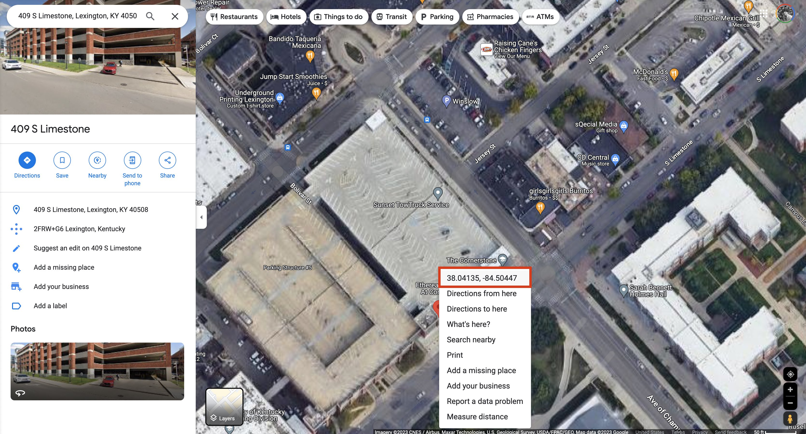

Presentation
Open in new tabWeek
Lab
In this lab we will explore how to take observations and encode them into a data format that can be stored, shared, and mapped. We will discover that we can locate any place on the planet with two numbers – an elagant and powerful concept. We will then visualize this data in our primary mapping application, QGIS.
Table of Contents
- Introduction
- Owning your data
- Downloading remote files
- Viewing and editing spatial data
- Making a quick visualization in QGIS
- Assignment
Introduction
Without data, we wouldn’t have much to show on a map. Let’s first loosely define data as observations encoded into a format that can be stored and shared. An observation might be made from a satellite above Earth taking photographs or a surveyor on the ground measuring the location of a property boundary. The format might be a photograph or a database and the it might be shared in a report or in a map.
Let’s think about the observations of our surroundings that reside in our memory. We can make a map of these memories and perhaps you have scribbled an impromtu map for a lost tourist. Geographers call it a mental map and it can show our perceptions of place. Here are two hand-drawn examples from UKy students.
Jessica’s Recreational Space
The Arboretum in Lexington, Kentucky
Both images show the hallmarks of a classic map; a depiction of where things (the observations) are related to one another, a title that describes the theme, a legend that explains the symbols, and a scale that shows the relationship between the map and the real world.
However, we see notable differents in how the mapmakers see their world. Jessica shows a dangerous area to northwest and the scale is applied only to driving distances, her primary mode of transportation. The Arboretum map uses a grid to more precisely locate and measure things – indeed, a goal of many maps – and the color shading attempts to show relative elevations.
Let’s examine Angelique’s ‘map’ of campus. First, can we accept this as a map without a scale or legend?
Angelique’s Daily Route
Because there is only one place on the planet where these observations could be made, we can accept this is a map. More importantly, this image exposes the DNA of all maps – the are they mapmaker’s story of place. Angelique sees her world as a loop through eat, study, class, and sleep. You might appreciate this view of the world.
These examples are creative works in that they are drawings of the author’s imagination (made from multiple, disconnected observations). Hand drawn maps today are prized historical artifacts with a rich aesthetic tradition. Modern mapmakers have the benefit of computers and software to create their maps, but they are still products of an imagination that select which observations to include and which to leave out. This decision is guided by the story that wants to be told.
OK, imagination is cool, but we don’t have access to the underlying data. The original observations are embedded in the memory of the mapmaker. And, would we want to solely rely on memory to create our maps?
Let’s now explore how we can create, manage, and share exact copies of our observations. This is the basis of modern digital mapmaking.
Owning your data
The prime benefit of creating data is that you own it. You decide how and to whom you share your data. You can even sell it.
Question: Have you ever downloaded something from the internet and then couldn’t find it? “Where did it go?” It’s so frustrating! Another dimension of owning your data is being able to access the data on your device or computer. Part of this lab is to cultivate good data hygiene where we proactively organize data and projects on our computers.
OK, let’s fire up our personal desktop computers (PC), either in the lab or on your personal computer, and get started.
Creating your local workspace
A local workspace is simply a directory on your computer that is dedicated to mapping. Everything you make in this course should live inside this workspace. The lab computers use the Windows operating system (OS), but you can use your personal computer if you prefer a different OS, e.g., macOS.
-
Open Windows File Explorer or macOS Finder and navigate to your home directory.
-
Click on Documents to enter that directory.
-
Create a directory called
geo109or another appropriate name. This will be your workspace for the semester. For this example, I’ll useYodaMapsfor the name of my workspace.
There are a few ways to do this, but try Right-clicking an empty space in the window and select New > Folder.
Create a workspace directory in your home directory on Windows
Create a workspace directory in your home directory on macOS
- Inside that folder, create another folder called
lab-01. This will be your workspace for this lab.
(Note: You should do these steps on any computer you intend to use for class.)
Right now, the folder is empty. Let’s add some spatial data.
Downloading remote files
The local computer is the one in front of you with a new, dedicated workspace for this lab. To get data, we often download it from a remote computer, one that we do not have physical access to and lives in the cloud (a.k.a. on someone else’s computer).
A remote file path is the location of a file on a remote computer. When we browse online, we’re using remote file paths to access files on remote computers. Often, we call these path URLs (uniform resource locator). Let’s consider this URL:
https://uky-gis.github.io/geo109/data/01/hello-world.csv
This path is unique among the billions of URLs online. Let’s break this URL down. The https:// tells the browser to use the secure hypertext transfer protocol when accessing this file, which verifies and encrypts our communications with the remote computer. The uky-gis.github.io is the remote computer’s domain name. The /geo109/data/01/ is the directory path to hello-world.csv, a comma-separated values (CSV) file that contains spatial data.
In order to download this file, we need to use a web browser.
-
Open your favorite browser and follow this link to download the file. The file will likely download to your Downloads directory.
-
Move the file to your
lab-01directory.
You can use Windows File Explorer or macOS Finder to move the file.
Move data to your lab-01 folder on Windows
Move data to your lab-01 folder on macOS
Viewing and editing spatial data
Now, let’s open the file in a text editor. A text editor is an application that allows us to view and edit text files, including certain spatial data types. There are many text editors available, but we’ll use Visual Studio Code, a free and open source text editor from Microsoft. Download and install Visual Studio Code on your computer – it is also installed on the lab computers.
- Open the
hello-world.csvfile in Visual Studio Code.
You should see something like this:
Viewing a CSV file
CSV files are one of the most common data formats to store spatial data. They are simple text files that can be read by almost any application. The file is a table with rows and columns. The first row is called the header and contains the names of the columns. The remaining rows are the records and contain the data. In this case, we have three columns and one record. When records represent geographical points, we often refer to them as features. This is a simple example of a tabular data type.
Let’s now examine the CSV format in some detail. Commas are special characters that separate columns, though other characters could be used instead, e.g., the tab or pipe | characters. The CSV can encode two types of data, numbers (quantities) and strings (sequences of characters). Strings should always be wrapped in double quotes " string content ".
The first two columns are numbers representing the latitude and longitude of the point. Latitude measures the distance from the equator (0 degrees) and ranges from -90 to 90 degrees. Longitude measures the distance from the prime meridian in London, England (0 degrees) and ranges from -180 to 180 degrees. The third column is a string representing the name of the point.
So, where is this location? We see that the latitude is positive (northern hemisphere) and the longitude is negative (western hemisphere) – might we be in North America? Let’s use Google Maps to find out.
- Copy the latitude and longitude values
38.038093,-84.503872from the CSV file and paste them into the search box in Google Maps.
You should see something like this:
Viewing the locations in Google Maps
As we can see, the location is Whitehall Classroom Building.
Creating new features
Let’s create a new feature by adding a new record with a different location and name. Use Google Maps to explore campus and discover the latitude and longitude for a location.
- Find the latitude and longitude for an interesting location on campus and add it to the CSV file.
What if we wanted to play video games, where would we go on campus? How about The Cornerstone:

Finding lat, lon in Google Maps
When we find a location on the map, click on the map to drop a marker. Then, right-click on the marker to display the latitude and longitude of the location. Click on the coordinates to copy them to the clipboard. Next past the latitude and longitude values into the CSV file and add a message for the location:
lat,lon,message
38.038093,-84.503872,"Geography, Y'all!"
38.041704,-84.504288, "One pinball machine @ The Cornerstone"
Note: The number of decimal places in the latitude and longitude values is important. The more decimal places, the more precise the location. The number of decimal places is called the precision of the value. For most data we use, 6 decimal places is adequate.
- Add two more locations to the CSV file.
Ok, let’s add a few more video gaming parlors that are off campus:
lat,lon,message
38.038093,-84.503872,"Geography, Y'all!"
38.041704,-84.504288,"One pinball machine @ The Cornerstone"
38.053765,-84.486388,"Arcadium has Galaga!"
38.057173,-84.518648,"The Burl Arcade has multiple pinballs 🤪"
We now have a file that we can share our favorite gaming locations with friends as simply as texting the content of the file. However, you might be saying, “I can just tell my friends to Google these locations.” That’s true, but what if we had locations that were not indexed by a search engine? For example, what if we wanted to share a favorite pinic spot or the best place to watch a sunset? Latitude and longitude is the most concise way to share a location anywhere on the planet. 🤯
Let’s now make a quick visualization of these locations in QGIS to verify that we have selected accurate locations.
- Save the CSV file with the three locations and close Visual Studio Code.
After making some edits to the CSV file, save the file in Visual Studio Code, e.g., in the application menu, find File > Save.
Making a quick visualization in QGIS
Mapmaking is a rather complex endeavor and requires specialized software. We’ll use free and open source software (FOSS) applications to create our maps, which means that we can share our data with others and they can use the same software to view and edit it.
In this section of the lab, we’ll tiptoe into the world of QGIS, our main, open source mapping application. You’ll likely want to try this part in the lab, but you can also try it at home. QGIS is available for Windows, macOS, and Linux.
Find QGIS in the Start Menu on Windows or in the Applications folder on macOS. (Note: On macOS, the first time you launch QGIS, you need to right-click open.)
- Open QGIS
You should see something like this:
First view of QGIS
QGIS is a powerful application with many features, but we’ll only use a few of them in this lab. For now, let’s just get a feel for the application.
- Create a new project in QGIS
- Add a basemap to the project
So, how do we do this? In the menu bar, select Project > New or click on the New Empty Project section in the start screen shown above. Let’s now add a basemap to our map. Basemaps are the background images that we see in maps. QGIS has a built-in basemap called OpenStreetMap, but we can add many others. In the Browser panel, right-click the XYZ Tiles name and select New Connection….
Add new XYZ tile connection
In the New XYZ Connection dialog, call the layer “Carto Voyager” and enter the following information for the URL:
http://basemaps.cartocdn.com/rastertiles/voyager/{z}/{x}/{y}{r}.png
Add Carto Voyager tiles
After you verify that you have entered the URL correctly, click OK. You should now see the new layer in the Browser > XYZ Tiles panel. Double-click the layer to add it to the map. You should now see something like this:
Adding new layer to the map
As we can see in this screen capture, we can add many base maps. A favorite is Stamen Watercolor, which is a painterly-styled map. Its URL is:
http://tile.stamen.com/watercolor/{z}/{x}/{y}.jpg
We’ll find other sources to add over the semester. Now, we need to add our CSV layer.
Adding a CSV layer in QGIS
When we add a text file that contains locations, we need to tell QGIS how to interpret the file. In our case, we need to tell QGIS that the file contains latitude and longitude values.
- View your CSV file in QGIS as a spatial layer.
In the menu bar, select Layer > Add Layer > Add Delimited Text Layer…. In the Data Source Manager dialog, click the Browse button and navigate to the CSV file that we created earlier. You should see something like this:
Adding a CSV point layer
Aside from the file path for the CSV, make sure your settings match the screen capture above. Click Add (and then Close) and you should see the points appear on the map:

Viewing CSV point layer on the map
You now should have enough experience to move on the the assignment.
Assignment
A local organization called LexRex wants to create a map of the coolest places to visit and recreate in downtown Lexington. They are particularly interested in little-known, ecclectic hidden gems. They don’t have any data and have asked you to help them locate four places.
In this assignment, you will create a CSV file containing the latitude, longitude, and a message describing the feature for the required four locations. Make sure you have worked through the lab documentation above before you start the assignment.
Deliverables
Please follow these requirements for the assignment:
- Create a CSV file containing the latitude, longitude, and a message describing the feature for the required four locations. The locations and message you want to show are completely up to you – but try to have fun. No location should exist outside of New Circle Road. (6 points @ 1.5 points each)
- For the feature’s message field value, make sure there is only one pair of double quotes around the message. For example,
"This is a message". If you have extra double quotes, the CSV file will not load correctly in QGIS. That means, you’ll need to figure out how to make a message for the feature that does not contain double quotes. (1 point) - Name the file
lexrex-{linkblue}.csvand replace{linkblue}with your linkblue name. For example,lexrex-JLo01.csv. (1 point) - You can use the
hello-world.csvfile as a template. But, make sure to delete the example data and replace it with your own data. (1 point) - Your lab TA will add one additional requirement. (1 point)
Submitting the assignment
Upload your CSV file to the Module 1 assignment on Canvas by the published due date. After the submission deadline, we will have a friendly competition in lecture to see who and what is the center of cool in Lexington.
Good luck!